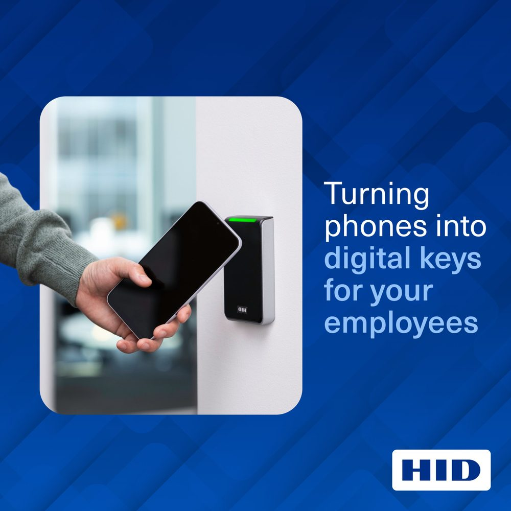
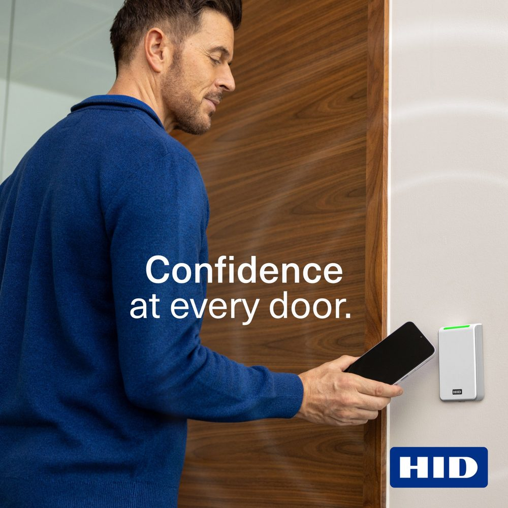
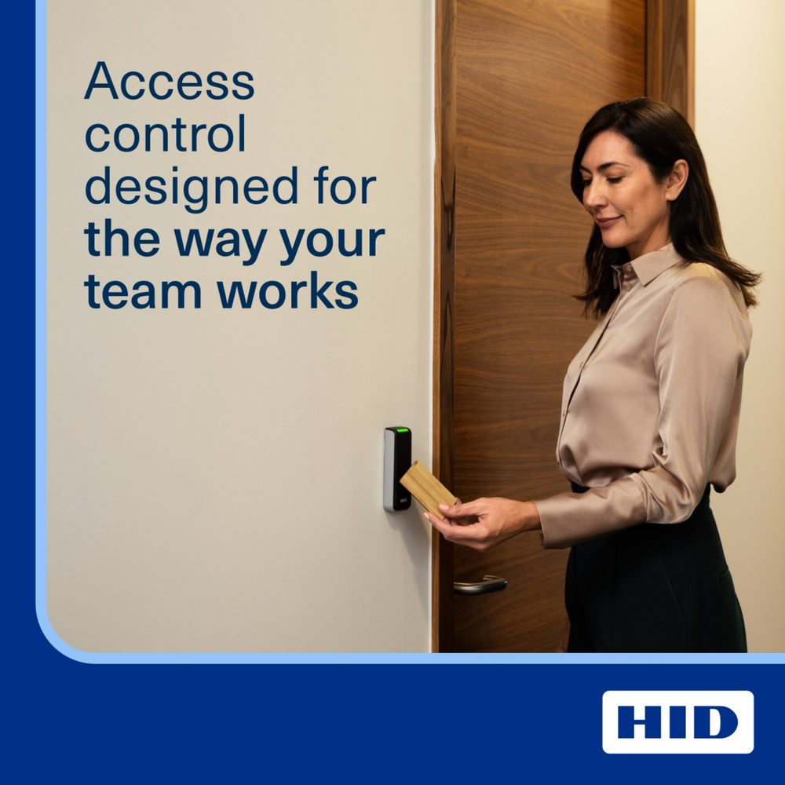
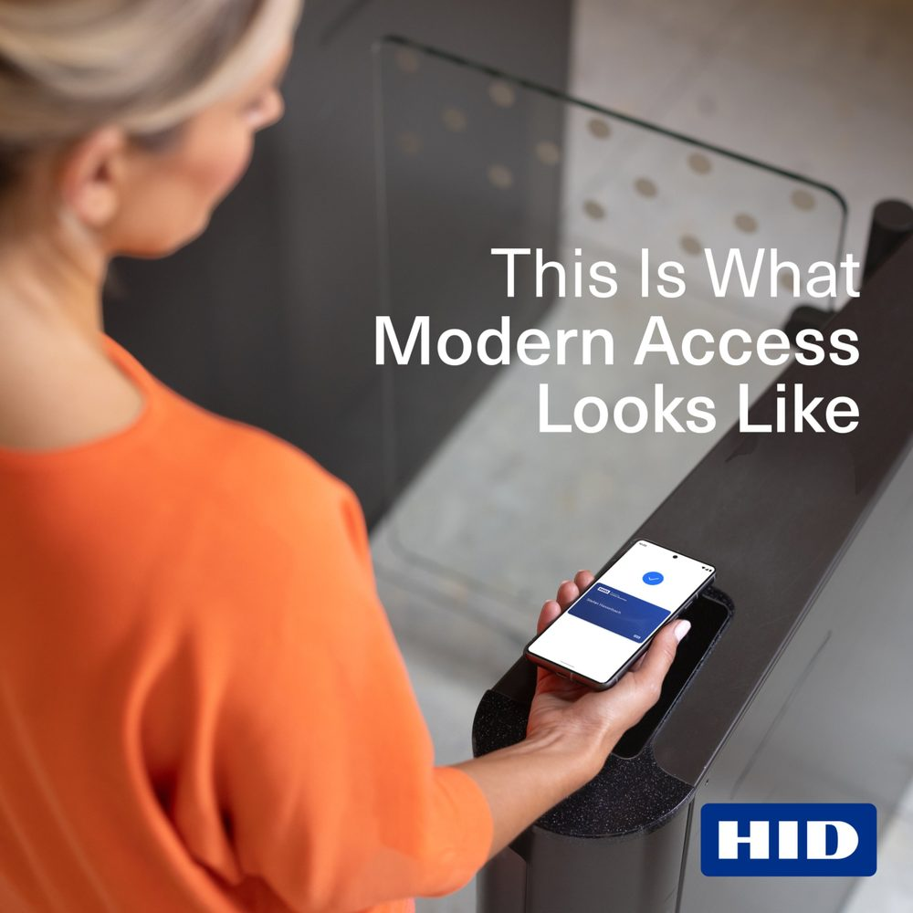
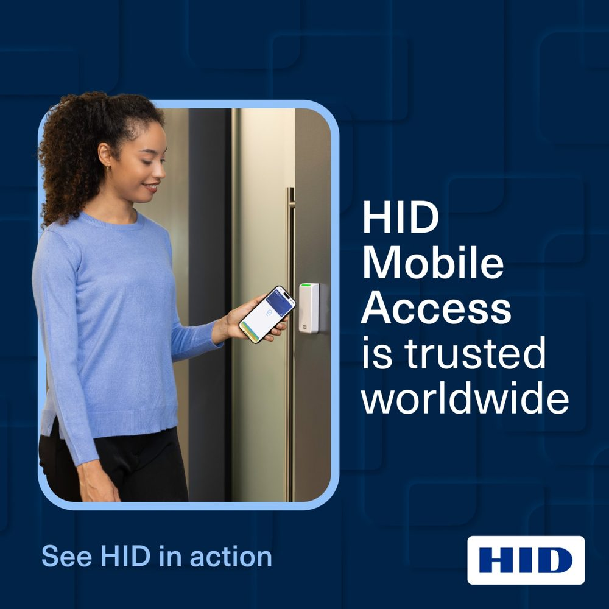
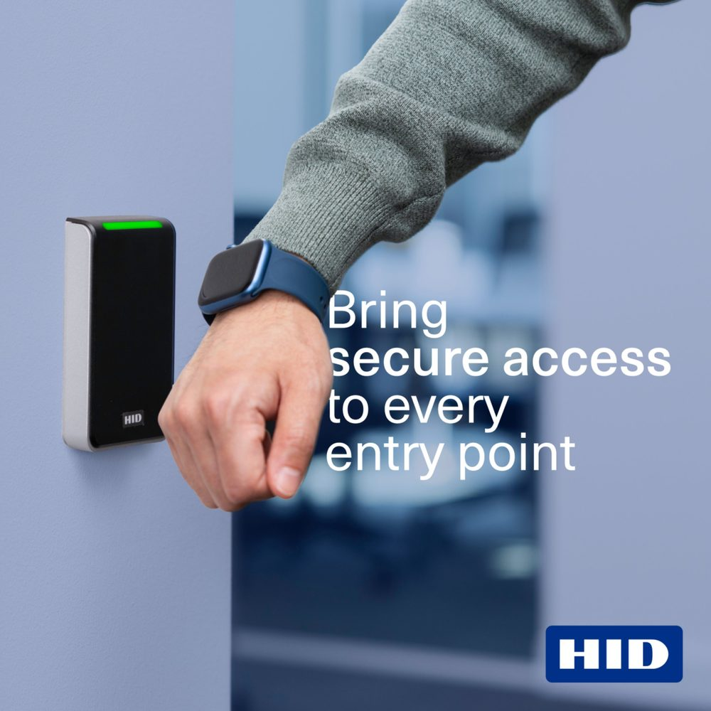

HID Global
Account-based marketing strategy for a complex access control product, built to speak clearly to multiple stakeholder groups without diluting the core proposition.

The approach
Precision audience segmentation and a messaging architecture built to speak differently to several stakeholder groups, while staying tightly aligned on a single core proposition.
At HID Global, I led the account-based marketing strategy behind a multi-tier B2B campaign for a complex access control technology product. Working across LinkedIn and Google Ads, I built precision audience segmentation and messaging that spoke differently to several stakeholder groups, from IT decision-makers to facilities and security buyers, while staying tightly aligned on a single core proposition.
A key part of the brief was working within real platform constraints, particularly LinkedIn’s targeting limits for a niche technical audience, which meant ongoing testing and refinement of creative, copy, and audience definitions to keep the campaign efficient without diluting the message.
What I did
- 01Account-based marketing strategy across LinkedIn and Google Ads
- 02Audience segmentation across multiple B2B stakeholder groups
- 03Messaging architecture tailored to each buyer type
- 04Creative and copy testing within LinkedIn’s platform constraints
- 05Campaign-level reporting and analytics
- 06Ongoing refinement of targeting and creative based on performance
Campaign work





Reach and intent, across a niche audience.
Performance across a 12-month flight (July 2025–June 2026), spanning brand awareness, acquisition, and conversion for a highly specific B2B audience.
17.1M
LinkedIn impressions
3M+
Google Ads impressions
19,303
Total website visits
115,703
Google Ads clicks
38,278
LinkedIn clicks
846
Total conversions